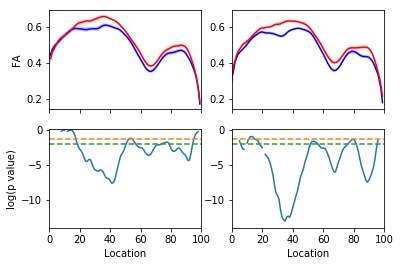
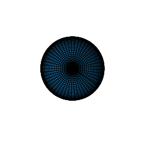

Introduction to Diffusion:
Model-driven diffusion MRI analysis

Ariel Rokem, University of Washington eScience Institute
Follow along at: https://arokem.github.io/ismrm2018models

What is the goal of diffusion MRI?
To make inferences about brain connectivity
To make inferences about tissue properties
To make inferences about differences between groups
To make inferences about individual brains
Models are tools for inference
They summarize the data (reductionism)
They endow the data with specific meaning (interpretation)
They help predict other data (statistics and ML)
They help us to explain our results (theory)
Classes of models
1. Phenomenological models
2. Mechanistic models
Phenomenological models
"...models that only represent observable properties of their targets and refrain from postulating hidden mechanisms..."Diffusion Tensor Model
Diffusion Tensor Model
$$ S(\theta) = S_0 e^{-b\theta^tQ\theta} $$
$$ \frac{S(\theta)}{S_0} = e^{-b\theta^tQ\theta} $$
$$ log[\frac{S(\theta)}{S_0}] = -b\theta^tQ\theta $$
=> Fit as a linear model
DTI statistics


Inferences about the underlying mechanisms
For example, changes in FA are associated with:De-myleniation (Beualieu et al., 1996)
But also where there are crossing fibers (Pierpaoli and Basser, 1996)
Interpretation is ambiguous!
Parameters can serve as "biomarkers"

Amyotrophic Lateral Sclerosis (ALS)
Classify patients based on the tissue properties in this part of the brain
Random Forest algorithm => 80% accuracy
More challenges
Extending DTI
Mechanistic models
Often mixture models
Signal is derived from a sum of components:
$$ S(\theta) = f_1 S_1(\theta) + f_2 S_2(\theta) + ... + f_n S_n(\theta) $$
Where $f_i$ is a volume fraction and $S_i$ is a signal from that component
$$ \sum{f_i} = 1 $$
Types of compartments
Intra-cellular diffusion
Extra-cellular diffusion
Neurite Dispersion
Free water DTI
$$ S(\theta) = f_w e^{-bD_w} + f_t e^{-b\theta^t Q \theta} $$ $$ f_w = 1 - f_t $$
Mechanistic models
CHARMED (Assaf et al., 2005)NODDI (Zhang et al., 2012)
DBSI ( (Wang et al., 2014))
From phenomological to mechanistic
Fieremans et al. (2011) propose recasting DKI parametes as indicative of mechanismEvaluating models
Benchmark with other methods
Parameter reliability
Model accuracy


Summary and conclusions
Contact information